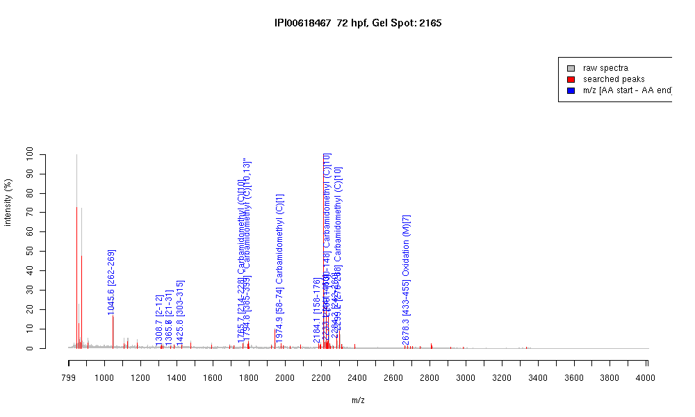

| Name | PREDICTED: similar to zinc finger protein 420 |
|---|---|
| MW | 65734.5 |
| PI | 9.14 |
| Mascot Protein Score | 65 |
| Masses (matched / unmatched) | 12 / 58 |

| Peptide | MZ (calc) | MZ (observed) | Error (DA) | Error (PPM) | Start | Stop | Modifications |
|---|---|---|---|---|---|---|---|
| QYLTEHVR | 1045.5425 | 1045.564 | 0.0215 | 21 | 262 | 269 | |
| AFIKEESEDIK | 1308.6682 | 1308.6647 | -0.0035 | -3 | 2 | 12 | |
| QEETEEAFRVK | 1365.6644 | 1365.6525 | -0.0119 | -9 | 21 | 31 | |
| NLTLAYSVEKCGK | 1425.7406 | 1425.7603 | 0.0197 | 14 | 303 | 315 | |
| IHTGEQLYTCQQCGK | 1765.7996 | 1765.7491 | -0.0505 | -29 | 214 | 228 | Carbamidomethyl (C)[10] |
| SHTGDQLYICQQCGK | 1794.7898 | 1794.8138 | 0.024 | 13 | 385 | 399 | "Carbamidomethyl (C)[10,13]" |
| CEGCLDFRSGEESEQTK | 1974.8168 | 1974.9065 | 0.0897 | 45 | 58 | 74 | Carbamidomethyl (C)[1] |
| IHTGEQPYTCQQCGKSF | 2183.9961 | 2184.1023 | 0.1062 | 49 | 158 | 176 | |
| IHTGEKPHTCQQCGKSFT | 2233.031 | 2233.1187 | 0.0877 | 39 | 441 | 460 | |
| IHTGEKPYTCQQCGNSFI | 2239.0383 | 2239.1384 | 0.1001 | 45 | 130 | 148 | Carbamidomethyl (C)[10] |
| IHTGEKPYTCQHCGHRF | 2284.061 | 2284.1716 | 0.1106 | 48 | 242 | 260 | |
| QNLTDHMRIHTGEKPHT | 2678.2344 | 2678.2834 | 0.049 | 18 | 433 | 455 | Oxidation (M)[7] |
| QYLTEHVR | 1045.5425 | 1045.5651 | 0.0226 | 22 | 262 | 269 | |
| QEETEEAFRVK | 1365.6644 | 1365.6476 | -0.0168 | -12 | 21 | 31 | |
| IHTGEQLYTCQQCGK | 1765.7996 | 1765.7449 | -0.0547 | -31 | 214 | 228 | Carbamidomethyl (C)[10] |
| SHTGDQLYICQQCGK | 1794.7898 | 1794.8123 | 0.0225 | 13 | 385 | 399 | "Carbamidomethyl (C)[10,13]" |
| CEGCLDFRSGEESEQTK | 1974.8168 | 1974.9045 | 0.0877 | 44 | 58 | 74 | Carbamidomethyl (C)[1] |
| IHTGEKPHTCQQCGKSFT | 2233.031 | 2233.0894 | 0.0584 | 26 | 441 | 460 | |
| IHTGEKPYTCQQCGNSFI | 2239.0383 | 2239.135 | 0.0967 | 43 | 130 | 148 | Carbamidomethyl (C)[10] |
| IHTGEKPYTCQHCGHRF | 2284.061 | 2284.1582 | 0.0972 | 43 | 242 | 260 | |
| IHTGEKPYSCQQCEKSFT | 2299.0593 | 2299.1689 | 0.1096 | 48 | 270 | 288 | Carbamidomethyl (C)[10] |
| QNLTDHMRIHTGEKPHT | 2678.2344 | 2678.2583 | 0.0239 | 9 | 433 | 455 | Oxidation (M)[7] |